Alison Booth
Tabor, Margaret Emma. Four Margarets. London: Sheldon, 1929.
TOC: Lady Margaret [Tudor]; Margaret Roper; Margaret Fell; Margaret Godolphin.
Emulating the medieval custom of honoring those “who had the same patron saint.”
Search OCLC WorldCat for this title.
Search Google Books for this title.
Tabor, Margaret Emma. Pioneer Women. With Portraits. 4 vols. London: Sheldon (SPCK), 1925; 1927; 1929. New York, Toronto: Macmillan, 1925, 1927, 1929.
TOC: vol. or series I: Elizabeth Fry; Elizabeth Blackwell; Florence Nightingale; Mary Slessor of Calabar.
Printed as Four Series, with contents equivalent to the volumes.
Search OCLC WorldCat for this title.
Search Google Books for this title.
Tabor, Margaret Emma. Pioneer Women. 2d ser. London: Sheldon; New York, Toronto: Macmillan, 1925; 1927; 1929.
TOC: Hannah More; Mary Carpenter; Octavia Hill; Agnes Jones. .
Search OCLC WorldCat for this title.
Search Google Books for this title.
Tabor, Margaret Emma. Pioneer Women. 3d ser. London: Sheldon; New York, Toronto: Macmillan, 1930.
TOC: Mrs. Sherwood; Isabella Bird; Mary Kingsley; Gertrude Bell .
Search OCLC WorldCat for this title.
Search Google Books for this title.
Tabor, Margaret Emma. Pioneer Women. 4th ser. London: Sheldon, 1933.
TOC: Caroline Herschel; Sarah Siddons; Maria Edgeworth; Mary Somerville .
Search OCLC WorldCat for this title.
Search Google Books for this title.
Tabor, Margaret Emma. The Saints in Art. New York: Stokes, 1908; Dutton, 1913. London: Methuen, 1908; 1913.
NOT:=art history, religious typology. Descendent of Jameson's Sacred and Legendary Art .
Search OCLC WorldCat for this title.
Search Google Books for this title.
Taft, Lorado. Women Sculptors of America. New York: Mentor Assoc., 1919.
NOT=periodical. "The Mentor, Department of Fine Arts, Serial Number 172" appears above title at head of article, yet it is catalogued as volume 6, issue 24, Feb 1, 1919, and paginated 1-11, with inset double pages of "gravures" of sculpture with a page of notes on categories such as "Decorative and Monumental Sculpture" or "Equestrian Monuments and Animal Sculpture." Various women are grouped in these notes, and the article offers brief sketches focusing on the works more than the biographical information of each major sculptor; many others are named. The italicized headings of the article provide our table of contents, though this is not a book attempting narrative biographies of a group of women.
TOC: Evelyn Longman; Janet Scudder; Bessie Potter Vonnoh; Nellie V. Walker; Anna V. Hyatt; Miss Eberle and Laura Gardin; A Group of Gifted Women.
Search OCLC WorldCat for this title.
Search Google Books for this title.
Taft, Zachariah. Biographical Sketches of the Lives and Public Ministry of Various Holy Women: Whose Eminent Usefulness and Successful Labours in the Church of Christ Have Entitled Them to Be Enrolled Among the Great Benefactors of Mankind: In Which Are Included Several Letters from the Rev. J. Wesley Never Before Published. 2 vols. vol. 1. London: Kershaw, 1825. vol. 2 Leeds: Taft, Cullingworth: 1828. 3 vols. in 1, London: Kershaw, 1835; 1838.
TOC: [vol. 1] Mrs. Susannah Wesley; Mrs. Mary Fletcher; Miss Sarah Lawrence; Mrs. Anne Gilbert; Mrs. Bathsheba Hall; Miss Grace Reed; Mrs. Sarah Grubb; Mrs. Jewitt; Miss Sarah Cox; Mrs. Mary Harrison; Mrs. Sarah Boyce; Miss Elizabeth Reeve; Mrs. Marsh; Mrs. Sibyll Best; Mrs. Mary Holder; Madame le Baronne de Krudener; Mrs. Elizabeth Evans; Mrs. Sarah Stevens; Madame Perrott; Miss Martha Williams; Miss Elizabeth Hurrel; Miss Elizabeth Dickinson; Mrs. Martha Routh; Miss Judith Land; Miss Hannah Parker; Mrs. Hannah Harrison; Miss Dorothy Ripley; Mrs. Martha Gregson; Miss Juliana White; Miss Savage; Miss Sarah Drury; Mrs. Hides; Miss Mary Brown; Mrs. M. Smith; Miss Ann Winfield; Mrs. Stevens; Miss Alice Cambridge; Miss Ann Lutton; Miss Emma Cottle; Miss Newman; Mrs. Rachel Blackburn; Miss Mary O'Bryan; Miss Ann Cutler; Miss Sarah Wilson; Miss Mary Sewell; [vol. 2] ; Mrs. Sarah Crosby; Mrs. Elizabeth Collett; Miss Mary Hewett; Mrs. Mary Dudley; Miss Margaret Watson; Mrs. Elizabeth Clarkson; Mrs. Mary Wiltshaw; Miss Sarah Eland; Miss Elizabeth Dart; Miss Hannah Parrott; Mrs. Margaret Fox; Miss Ann Thompson; Mrs. Mary Lawrance [sic]; Mrs. Hainsworth; Miss Eliza Wilson; Miss Mary Tooth; Mrs. Jane Pearson; Mrs. Mary Neale; Miss Hannah Hunt; Miss Margaret Adams; Mrs. Mary Prideaux; Mrs. Ann Mercy Bell; Mrs. Elizabeth Holme; Mrs. Mabel Wigham; Mrs. Martha Williams; Miss Mary Gurney; Mrs. Elizabeth Wilson; Mrs. Deborah Wardell; Mrs. Jane Gee; Mrs. Elizabeth Rawlinson; Miss Ann Carr; Mrs. Catherine Phillips; Miss Ann Burrows.
Search OCLC WorldCat for this title.
Search Google Books for this title.
Tallentyre, S[tephen] G., [and Evelyn Beatrice Hall]. Women of the Salons, and Other French Portraits. London and New York: Longman, 1901. New York: Putnam, 1926.
TOC: Madame du Deffand; Mademoiselle de Lespinasse; Madame Geoffrin; Madame d'Epinay; Madame Necker; Madame de Staël; Madame Récamier; Tronchin: A Great Doctor; The Mother of Napoleon; Madame de Sévigné; Madame Vigée le Brun.
Search OCLC WorldCat for this title.
Search Google Books for this title.
Taney, Mary Florence. Kentucky Pioneer Women: Columbian Poems and Prose Sketches. Cincinnati, OH: R. Clarke, 1893.
NOT:=miscellany, history.
Search OCLC WorldCat for this title.
Search Google Books for this title.
Tappen, Kathleen B., and Bernice T. Morris. Prominent Women in Latin America. Washington [DC]: U.S. Office of Inter-American Affairs, Research Division, 1944.
See p132. NOT=reference work.
Search OCLC WorldCat for this title.
Search Google Books for this title.
Telford, John. Women in the Mission Field: Glimpses of Christian Women among the Heathen. London: Kelly, 1895.
A Wesleyan minister.
TOC: Mary Moffat; Mary Livingstone; Anne Hasseltine Judson; Sarah Boardman Judson; Dorothy Jones and the Maria Mail Boat; Margaret Cargill in Tonga and Fiji; Mary Cryer, the Missionary Saint; Helen Saker and the Cameroons Mission; Anna Hinderer in the Yoruba Country; Mary L. Whately Among the Moslems; Lydia M. Rouse Among Soldiers and Sailors in India; A.L.O.E. at Batala.
Search OCLC WorldCat for this title.
Search Google Books for this title.
Tennessee Federation of Women's Clubs, [FWC]. Woman's Work in Tennessee. Memphis: Jones-Briggs/Tennessee FWC, 1916.
NOT = Local compendium. No TOC. This collection details the lives of the women in the Tennessee Federation of Women’s Clubs. The collection contains short 1-3 paragraph bios of these women (including portraits). However, most of the collection is devoted to the history of the Tennessee Federation of Women’s Clubs (i.e. successful reforms and legislation). The introduction reads, “In these pages we partially tell the story of the mountain cabins, into whose lives the women of the Tennessee Federation have brought the hope of religion and the blessings of health and hygiene.” Ends with 10 pages of advertisements for Memphis area companies.
Search OCLC WorldCat for this title.
Search Google Books for this title.
Terhune, Albert Payson. Superwomen. New York: Ainslee Magazine; Moffat, Yard; World Library; Cleveland: International Fiction Library, 1916. As: Famous Hussies of History. Cleveland: World, 1943. Gardners Books, 2007. As: Famous Hussies of History: Stories of the Superwomen. Fargo, ND: Ephemera Bound, 2005.
TOC: Lola Montez; Ninon de L'Enclos; Peg Woffington; Helen of Troy; Mme Jumel; Adrienne Lecouvreur; Cleopatra; George Sand; Mme du Barry; Lady Blessington; Mme Recamier; Lady Hamilton.
Search OCLC WorldCat for this title.
Search Google Books for this title.
Terhune, Albert Payson. Wonder Women in History. London and New York: Cassell, 1918.
TOC: Marie de Chevreuse; Ninon de l'Enclos; Marie de Brinvilliers; Anna Brudenell; Betty Castlemaine; Nell Gwyn; Adrienne Lecouvreuer; Peg Woffington; Madame de Pompadour; Madame du Barry; “Perdita” Robinson; Jeanne de Lamotte; Josephine Beauharnais; Madame Récamier; Marguerite Power; George Sand; Fanny Elssler; Lola Montez; Rachel.
Search OCLC WorldCat for this title.
Search Google Books for this title.
Thayer, Bethia Hayward. Brockton Women: Photogravures. New York: Albertype, 1892.
NOT=reference: photogravures. A brief account of Brockton’s representative home-makers. Includes brief biographical sketches (one or two paragraphs) of eight Brockton women. This short collection concludes with approximately ten pages of photogravures.
TOC: Mrs. Lucy C. Cross; Mrs. Taylor Cobb; Mrs. Esther M. Baxendale; Mrs. Elizabeth A Kingman; Mrs. H.B. Holmes; E. Vinton Blake; Mrs. Elizabeth A. Packard; Mrs. S. Agnes Parker.
Search OCLC WorldCat for this title.
Search Google Books for this title.
Thayer, William M[akepeace]. The Poor Girl and True Woman; or, Elements of Woman's Success Drawn from the Life of Mary Lyon and Others; A Book for Girls. Boston: Gould and Lincoln; New York: Sheldon, Blakeman; Cincinnati, OH: Blanchard, 1858; 1859; 1861. Also as: The Good Girl and True Woman (with above subtitle, or with only “. . .Lyon and Other Similar Characters”), Boston: Gould and Lincoln; New York: Sheldon, Blakeman; Cincinnati, OH: Blanchard, 1861; 1863; 1864. As: The True Woman: Elements of Character Drawn from the Life of Mary Lyon and Others: A Book for Girls. New York: Crowell, [1880-1900?].
Thayer 1820-1898, author of Womanhood: Hints and Helps for Young Women (New York: Whittaker, 1895); Men Who Win, or Making Things Happen ; White House Series of Biographies , etc.
NOT= Advice. Designed for girls from ten to eighteen years of age. It is a handbook for the cultivation of female character and success in the areas of housekeeping, teaching music, learning, and a multitude of other matters. The volume references several distinguished women, but focuses mainly on the qualities of Miss Lyon, who “was not a perfect woman…yet she possessed a rare combination of qulaities, such as are indispensible to a high order of character…” (from Preface).
Search OCLC WorldCat for this title.
Search Google Books for this title.
Thayer, William M[akepeace]. Women Who Win: Or Making Things Happen. New York, London, and Edinburgh: Nelson, 1896; 1897; 1898; 1901; 1908.
TOC: Harriet Beecher Stowe; Florence Nightingale; Dorothea Lynde Dix; Margaret Fuller Ossoli; Frances Power Cobbe; Mary Lyon; Mary Ashton Livermore; Jenny Lind; Louisa May Alcott; Queen Victoria; Mary Somerville; Lucy Stone Blackwell; Frances Elizabeth Willard; Clara Harlowe Barton; Elizabeth Fry.
Possible expansion or rev. ed. of previous book, continued posthumously. Pref: “There is no sex among souls; hence there is none in success.” “Women are joint-partners now in making the world better. . . . The views of womanhood, a hundred years ago, were astonishingly false” (iii-iv).
Search OCLC WorldCat for this title.
Search Google Books for this title.
Thomas, Henry. Wild Women of History. Girard, KS: Haldeman-Julius, 1937.
TOC: Marguerite of Valois; Mary Read; Theodora; Cleopatra; Calamity Jane; Rosamunda; Victoria Woodhull; Lola Montez; Ninon de Lenclos; Mlle. Maupin.
Henry Thomas is identified as "Author of "The Story of the Human Race" and "Weavers of Words," etc." The chapter titles are: 1. The Devil's Mistress; 2. A Pirate in Petticoats; 3. She Danced Into a Royal Bed; 4. The Sorceress of the Nile; 5. The White Devil of the Black Hills; 6. The Siren of the Black Forests; 7. The Purring Tigress; 8. The Playgirl of the Nineteenth Century; 9. The Priestess of Pleasure; 10. The Delicious Daredevil. A label on a rebound copy loaned by Washington State University Pullman has "Schnittkind. Wild Women of History," which leads to the probability that Henry Thomas Schnittkind, who is on record as publishing under the pseudonym Henry Thomas, wrote this collection as well as Life Stories of the Great Inventors and Forty Famous Composers (both listed in 1948) among other works co-authored with Dana Lee Thomas [Schnittkind]. Some twenty pages (unpaginated) of advertisements follow page 76: a wonderful array of self-education and liberal opinion (in favor of birth control), including a novel by E. and M. Haldeman-Julius, Dust, Joseph McCabe's eight volumes The Key to Love and Sex, the works of Clarence Darrow, etc.
Search OCLC WorldCat for this title.
Search Google Books for this title.
Thompson, Henry [1797-1878]. The Life of Hannah More: With Notices of Her Sisters. Philadelphia: Carey & Hart; London: Cadell; Edinburgh: Blackwood, 1838. Stuttgart: Steinkopf, 1847.

Search OCLC WorldCat for this title.
Search Google Books for this title.
Thompson, Henry Adams [b. 1837]. Women of the Bible, Consisting of Biographical and Descriptive Sketches of the Representative and More Important Women of Old Testament and New Testament Times, as Viewed in the Light of Our Present Day Civilization. Introduction by Henrietta G. Moore. Illustrated. Dayton, OH: U[nited] B[rethren], 1914.
Search OCLC WorldCat for this title.
Search Google Books for this title.
Thoms, Adah B. Pathfinders: A History of the Progress of Colored Graduate Nurses... with Biographies of Many Prominent Nurses. New York: Kay, 1929; Garland, 1985.
NOT = Miscellaneous History. Chapters focus primarily on places and mention various women in relation to these places. Dedicated to The Colored Graduate Nurses of America, with "The Florence Nightingale Pledge" as the epigram to the Introduction. Includes portraits. Illustrations list provides biographical list: i. Aunt Harriet: Spy, scout and Civil War nurse; ii. Elizabeth Tyler, R.N.; iii. Jessie Sleet Scales, R.N.; iv. Ludie A. Andrews, R.N.;v. Louise M. Russell, R.N.; vi. Cecele B. Anderson, R.N.; vii. Mary Merritt, R.N.; viii. Ellen Woods Carter, R.N.; ix. Clara M. Harris, R.N.; x. Laura Baynes, R.N.; xi. Edith M. Carter, R.N.; xii. Cora Watson Winston, R.N.; xiii. Mattie C. McGhee, R.N.; xiv. Bessie B. Hawes, R.N.; xv. Charlotte K. May, R.N.; xvi. Mary E. Stayley, R.N.; xvii. Mary E. Williams, R.N.; xviii. Mabel Doyle Keaton, R.N.; xix. Marion J. Pettiford, R.N.; xx. Jennette O. May, R.N.; xxi. Alice Sightler, R.N.; xxii. Miss Belle Davis; xxiii. Emma C. Wilson, R.N.; xxiv. Petra Pinn, R.N.; xxv. Carrie E. Bullock, R.N.
Chapter titles: Chapter I: Introduction; Chapter II: Early Pathfinders; Chapter III: The First Professional Nurse; Chapter IV: Famous Schools and Their Graduates; Part I – Provident Hospital Training School; Part II – Dixie Hospital Training School; Part III – Tuskegee Institute Training School; Part IV – Freedmen’s Hospital Training School; Part V – St. Agnes Hospital Training School; Part VI – Flint – Goodridge Hospital Training School; Part VII – Lincoln Hospital Training School; Part VIII – Brewster Hospital Training School; Part IX – Mercy Hospital Training School; Part X – George W. Hubbard Hospital Training School; Part XI – Kansas City Hospital, No. 2, Training School; Part XII – Lamar Wing, University Hospital, Augusta; Part XIII – Millie E. Hale Hospital Training School; Part XIV – Well-known Graduates of Other Schools.
Search OCLC WorldCat for this title.
Search Google Books for this title.
Thomson, Mrs. A. T. [Katherine Byerley] [1797-1862]. The Queens of Society. By Grace and Philip Wharton [pseud.] Illustrated by Charles Altamont Doyle and the Brothers Dalziel. 2 vols., London, 1860. New York: Harper, 1860; 1861. London and New York: Routledge, 1867; 1870; 1872; 1876. 2d ed., 2 vols., New York: Stokes; Worthington; London: Jarvis; Philadelphia: Porter & Coates, Coates, 1890.
TOC: Sarah, Duchess of Marlborough; Mme Roland; Lady Mary Wortley Montagu; Georgiana, Duchess of Devonshire; Letitia Elizabeth Landon (LEL); Mme de Sévigné; Sydney, Lady Morgan; Jane, Duchess of Gordon; Mme Récamier; Lady Hervey; Mme de Staël; Mrs. Thrale Piozzi; Lady Caroline Lamb; Anne Seymour Damer; La Marquise du Deffand; Elizabeth Montagu; Mary, Countess of Pembroke; La Marquise de Maintenon. .
-
Lady Mary, Pope, and Kneller, The Portrait Scene
-
The Duchess of Marlborough pleading her own case
-
 The Inauguration of the Republic
The Inauguration of the Republic -
 The Beautiful Duchess of Devonshire, a Kiss for a Vote
The Beautiful Duchess of Devonshire, a Kiss for a Vote -
 The Poet's Exile-- L.E.L. at Cafe Coast Castle
The Poet's Exile-- L.E.L. at Cafe Coast Castle -
The Hotel de Rambouillet
-
The Counterfeit Lady Morgan
Search OCLC WorldCat for this title.
Search Google Books for this title.
Thomson, Katherine. Celebrated Friendships. 2 vols., London: Hogg, 1859; 1861.
Same author as a797? A biographer of royalty from 1826 onward; novelist 1840s-1850s.
TOC: Fenelon and Madame Guyon; Mrs. Elizabeth Carter and Miss Talbot; David Garrick and Mrs. Clive; Frances, Countesss of Hertford and Henrietta Louisa, Countess of Pomfret.
Search OCLC WorldCat for this title.
Search Google Books for this title.
Thormanby. [i.e. Wilmott Willmott-Dixon]. Dainty Dames of Society, A Portrait Gallery of Charming Women. Portraits and Illustrations from Rare and Famous Pictures by Masters of British and French Schools. 4 vols., London: Black; New York: Stokes, 1903. London: St. Andrew's; New York: Brentano's, [1900-1910?].
Author of Famous Racing Men (London: Hogg, 1882), Kings of the Rod, Rifle, and Gun (New York: Dutton; London: Hutchinson, 1901), etc. Cf. Hoppner/Wilkins, T. Willing, Craven.
Search OCLC WorldCat for this title.
Search Google Books for this title.
Thormanby. [i.e. Wilmott Willmott-Dixon]. Queens of Beauty and Their Romances. 2 vols., London: Hutchinson; New York: Appleton, 1907.
TOC: Volume I; A Puritan Wife (Mrs. Lucy Hutchinson); A Fair Woman with Discretion (La Belle Hamilton); From the Castle to the Convent; Rival State Queens (Mrs. Bracegirdle; Nancy Oldfield); A Saint In Society; La Belle Dame Sans Merci (Lady Mary Pierrepoint); Maids of Honour (Mary Bellenden; Molly Lepel); “The Goddesses” (Maria Gunning); A Victim of Indiscretion (Lady Charlotte Bury); A Crown Well Lost (Lady Sarah Lennox); A Political Siren; The “Twin Wives” (Agnes Berry; Mary Berry); Volume II; The Romance of Two Royal Duchesses (The Duchess of Cumberland; Maria, Countess of Waldegrave); “The Wild Irish Girl” (Lady Morgan; Lady Clarke); “The Nightingales of Bath” (Mrs. Sheridan and Mrs. Tickell); “The Three Graces” (Mrs. Sheridan [Elizabeth Linley i.e. not same as above]; Helen, Marchioness of Dufferin; Mrs. Norton); The Heiresses of Rose Hill (Countess of Charlemont [Anne Bermingham, in database as Anne Caulfeild, Lady Charlemont]); The Queen of Almack’s (The Countess of Jersey [Sarah Sophia Child Fane]).
W. Willmott Dixon on titlepage.
-
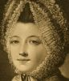Elizabeth, Duchess of Hamilton
-
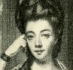Duchess of Cumberland
-
 Lady Morgan
Lady Morgan -
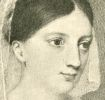Lady Clarke
-
 Mrs. Sheridan and Mrs. Tickell
Mrs. Sheridan and Mrs. Tickell -
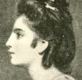Mrs. Sheridan
-
 Mrs. Sheridan
Mrs. Sheridan -
 Countess of Charlemont
Countess of Charlemont -
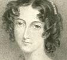Countess of Jersey
Search OCLC WorldCat for this title.
Search Google Books for this title.
Thornton, Ella May. Georgia Women, 1840-1940: A Record of Achievement. Atlanta: n.p., 1941.
NOT = Reference Work, Pamphlet
TOC: Mrs. Alice McLellan Birney; Mrs. Maud Barker Cobb; Mrs. Rebecca Latimar Felton; H. Augusta Howard; Mrs. Anne Wallace Howland; Madam Octavia Walton LeVert; Mrs. Mary Ann Rutherford Lipscomb; Mrs. Passie Fenton McFabe Ottley; Mrs. Juliette Gordon Low; Mrs. Mary Thomas Lumpkin; Alexa Stirling; Mary L. Telfair.
See p139.
cf. earlier collections of Georgia women in 1920s-1930s by Blair, Felton, Nevin, Reed.
Search OCLC WorldCat for this title.
Search Google Books for this title.
Thornton-Cook, Elsie Prentys. Her Majesty: The Romance of the Queens of England, 1066-1910. London: Murray, 1926; 1928. New York: Dutton, 1927; 1928.
Author of Their Majesties of Scotland (London: Murray, 1928), and biographical novels about the Carlyles and the Brontës.
TOC: I. The House of Normandy; "Mother of a Mighty Line of Kings": Matilda of Flanders; "From Nunnery to Throne": Edith Matilda of Scotland; "From Throne to Convent": Adelicia of Louvaine; "Queen vs. Empress": Matilda of Boulogne and the Empress Matilda-Maud; II. The House of Plantagenet; "By the Wrath of God, Queen of England!": Eleanora of Aquitaine; "A Crusading Queen": Berengaria of Navarre; "By the Glitter of a Crown": Isabella of Angoulême, and also concerning Avisa; "The Ladye of Gay Provence": Eleanor of Provence; "The Faithful": Eleanora of Castile; "Good Withouten Lack": Marguerite of France; "The She-Wolf of France": Isabella of France; "A Queen Whose Crown Was Pawned": Philippa of Hainault; "A Daughter of the Caesars": Anne of Bohemia; The "Little" Queen: Isabella of Valois; III. The House of Lancaster; "The Witchcraft Queen": Johanna of Navarre; "We Will Have the King's Daughter": Katherine of Valois; "The Red Rose Queen": Margaret of Anjou; IV. The House of York; "The Widow-Woman of England": Elizabeth Woodville; "The Pageant Queen": Anne Neville; V. The House of Tudor; "A Queen in Sanctuary": Elizabeth of York; "They Shall Be Childless": Katharine of Aragon; "Queen Anne Sans Tête!": Anne Boleyn; "Bound to Obey and Serve": Jane Seymour; "God Send Me Weel to Keepe": Anne of Cleves; "No Other Than His!": Katharine Howard; "Katheryn the Quene-Regent, K.P.": Katharine Parr; "The Nine Days' Queen": Lady Jane Grey; "Marye, Child of K....": Mary Tudor; "It Was Done by a Woman": Elizabeth Tudor; VI. The House of Stuart; "A Boy-King's Wooing": Anne of Denmark; "Queen of Bitain and Queen of Love": Henrietta Maria (also the story of Anne Hyde); "Accused at the Bar of the House": Catherine of Braganza; "The Fortune of England": Mary Beatrice of Modena; "The Sister Queens": Mary II; "The Sister Queens": Anne; VII. The House of Hanover; "The Duchess of Ahlden": Sophia Dorothea of Celle; "You May Strut, Dapper George": Caroline of Anspach; "A Cinderella Princess": Charlotte Sophia of Mecklenburg-Strelitz; "The 'Injured Queen of England'": Caroline of Brunswick; "The Gentle Queen": Adelaide of Saxe-Meiningen; VIII. The House of Saxe-Coburg and Gotha; "The Sea Kings Daughter": Alexandra; Appendix: A Chart of Dates and Nationalities.
Search OCLC WorldCat for this title.
Search Google Books for this title.
Thornton-Cook, Elsie Prentys. Royal Elizabeths: The Romance of Five Princesses, 1464-1840. London: Murray, 1928; 1930. New York: Dutton, 1929. Freeport, NY: Books for Libraries, 1967.
The dedication reads, "Dedicated by gracious permission to Princess Elizabeth with the hope that in years to come Her Royal Highness will find pleasure in reading the romantic stories of the five preceding princesses Elizabeth who have left footprints in the sands of time." The dedication ends with the quote, "The roots of the present lie deep in the past." The short introduction is similarly phrased. Each chapter begins by tracing the lineage of its featured woman. Illustrated with portraits of the women throughout.
TOC: "But You Shall Be Queen and Wear the Crown": Elizabeth of York (daughter of Edward IV and Elizabeth Woodville and sister of the little princes murdered in the tower); England's Elizabeth": Elizabeth Tudor, Queen of England (daughter of Henry VIII and Anne Boleyn); "First Dochteur of Scotland" and "Queen of Hearts": Elizabeth Stewart (daughter of James VI of Scotland (I of England) and Anne of Denmark); "To Be Degraded of All Princely Honours": Elizabeth Stuart (daughter of Charles I and Henrietta Maria); "Kiss and Be Friends!": Elizabeth, Princess of England (daughter of George III and Charlotte of Mecklenburgh-Strelitz).
Search OCLC WorldCat for this title.
Search Google Books for this title.
Thornton-Cook, Elsie Prentys. Royal Marys, Princess Mary and Her Predecessors. London: Murray, 1929. New York: Dutton, 1930.
Each chapter begins by tracing the lineage of the woman featured. Illustrated throughout with portraits of the women.
TOC: I. Kings' Daughters: Mary of the Line of Atholl and Mary of Boulogne; II.Three Edwardian Marys; A Portia of the Thirteenth Century: Mary daughter of Edward I and Eleanora of Castile; Nursery Espousals: Mary Duchess of Brittany, daughter of Edward III and Philippa of Hainault; Elizabeth's Understudy: Mary daughter of Edward IV and Elizabeth Woodville; III. "Marye the Frenche Quene": Daughter of Henry VII and Elizabeth of York; IV. Princess of the Realm: (Mary I) Daughter of Henry VIII and Katharine of Aragon; V. "In Her Life She Was lovely and Pleasant": Mary daughter of James I (VI of Scotland) and Anne of Denmark; VI. "Discreet and Debonair": Mary daughter of Charles I and Henrietta Maria. Princess of Orange; VII. "A Ladie of Great Beautie and Eminent Virtue": Mary daughter of James II (Duke of York) and Anne Hyde. Mary II; VIII. "The Mildest and Meekest of Her Sex": Mary daughter of George II and Caroline of Anspach. Landgravine of Hesse-Cassel; IX. The "Sweet" Princess: Mary daughter of George III and Charlotte of Mecklenburgh-Strelitz. Duchess of Gloucester; X. "Our" Princess, "La Belle Rose Anglaise": Mary daughter of George V and Queen Mary.
Search OCLC WorldCat for this title.
Search Google Books for this title.
Tillotson, John. Lives of Illustrious Women of England: Or, Biographical Treasury: Containing Memoirs of Royal, Noble, and Celebrated British Females of the Past and Present Day. London: Holmes, 1850; 1853; 1880.
TOC: Queen Victoria; Mrs. Elizabeth Fry; Queen Elizabeth; Joanna Baillie; Lady Jane Grey; Frances Burney; Anne Boleyn; Duchess of Kent; Hannah More; Queen Adelaide; Mrs. S.C. Hall; Mary, Queen of Scots; Lady Morgan; Countess of Buckinghamshire; Lady Grizel Biallie; Jane Seymour; Mrs. Piozzi; Countess of Coventry; Charlotte Smith; Queen Caroline; Lady Rachael Russell; Lady Georgina Russell; Lady Huntingdon; Mrs. Hemans; Mrs. Bunyan; Lady A. Gower; Katherine Parr.
Additional subtitle: Of the Past and Present 1855.
Search OCLC WorldCat for this title.
Search Google Books for this title.
Timpson, Thomas. British Female Biography: Being Select Memoirs of Pious Ladies in Various Ranks of Public and Private Life: Including Queens, Princesses, Martyrs, Scholars, Instructors, Poetesses, Philanthropists, Ministers' Wives. London: Aylott & Jones, 1846.
TOC: vol I: British Queens: Queen Bertha [title “Queen” repeated for each of the following]; Ethelberga; Margaret of Scotland; Eleanora; Anne, of Bohemia; Catherine Parr; Jane Grey; Mary II.; vol II: British Princesses: Princess Claudia, of Rome[title "Princess" repeated]; Margaret; Elizabeth of Bohemia; Elizabeth, of the Rhine; Amelia; Charlotte, of Wales.; vol III: British Female Martyrs: Lady Joan Boughton; Helen Stark; Lady Anne Askew; Mrs. Warne; Joan Lashford; Joan Waste; Alice Benden; Mrs. Lewis; Cicelly Ormes; Elizabeth Prest; Lady Lisle; Mrs. Gaunt.; vol IV: British Learned Ladies: Mrs. Roper; Lady Anna Bacon; Lady Russel [sic]; Mrs. Carter; Miss Smith.; vol V: British Ladies' Instructors: Mrs. Hannah More; Mrs. Martha More; Miss Neale; Mrs. Graham; Miss Graham.; vol VI: British Poetesses: Countess of Pembroke; Mrs. Rowe; Mrs. Steele; Miss Jane Taylor; Mrs. Bulmer.; vol VII: British Philanthropists: Anne, Countess of Pembroke; Lady Hewley; Lady Glenorchy; Selina, Countess of Huntingdon; Miss Gray; Mrs. Rupertia Hill; Mrs. Fry.; vol VIII: British Minister's Wives: Mrs. Baxter; Mrs. Bury; Mrs. Wesley; Mrs. Good; Mrs. Doddridge; Mrs. Fletcher; Mrs. John Clayton.
Author of Memoirs of Mrs. Elizabeth Fry (same publisher, and New York: Stanford & Swords, 1847).
Search OCLC WorldCat for this title.
Search Google Books for this title.
Timpson, Thomas. Female Biography of the New Testament: With Preliminary Notices of the Condition of Women in All Ages. London: Ward, 1834.
Search OCLC WorldCat for this title.
Search Google Books for this title.
Timpson, Thomas. Memoirs of British Female Missionaries; With a Survey of the Condition of Women in Heathen Countries. With An Introductory Essay on the Importance of Female Agency in Evangelizing Pagan Nations by Miss Thompson. London: Smith, 1841.
TOC: Mrs. Coultart; Mrs. Wilson; Mrs. Harvard; Mrs. Mundy; Mrs. Norton; Mrs. Clough; Mrs. Jowett; Mrs. Kilham; Mrs. Stallybrass; Miss Bird; Mrs. Ellis; Mrs. M. Wilson; Mrs. Loveless; Mrs. Taylor; Miss Smith.
Frontispiece: “Burning of the Wives and Slaves of Runjeeb Sing.” Lack of subjects' first names suggests well-recognized status, as well as small compass of this community.
Search OCLC WorldCat for this title.
Search Google Books for this title.
Tomkinson, E. M. Sarah Robinson, Agnes Weston, and Mrs. Meredith. World's Workers Series. London and New York: Cassell, 1887; 1889; 1890; 1893.
See works by Lizzie Alldridge and Phyllis Browne.
Search OCLC WorldCat for this title.
Search Google Books for this title.
Trollope, Thomas Adolphus. A Decade of Italian Women. 2 vols. London: Chapman & Hall, 1859.
TOC: Vol. 1: St. Catherine of Siena; Caterina Sforza; Vittoria Colonna; Vol. 2: Tullia d'Aragona; Olympia Morata; Isabella Andreini; Bianca Cappello; Olympia Pamfili; Elisabetta Sirani; La Corilla.
Trollope contributed to Lives of Celebrated Women (1875); author of a biography of Vittoria Colonna (1881); and "The Girlhood of Catherine de' Medici" (pre-1859).
Search OCLC WorldCat for this title.
Search Google Books for this title.
Trowbridge, W[illiam] R[utherford] H[ayes]. Court Beauties of Old Whitehall: Historiettes of the Restoration. With 32 Illustrations. London: Unwin; New York: Scribner, 1906.
TOC: Hortense Mancini, Duchesse de Mazarin; Barbara Villiers, Duchess of Cleveland; "La Belle Stuart," Duchess of Richmond; "La Belle Hamilton," Comtesse de Gramont; "The Lovely Jennings," Duchess of Tyrconnel; "Wanton Shrewsbury," Anna Maria, Countess of Shrewsbury; "Madame," Henrietta, Duchess of Orleans; Louise de Kéroual, Duchess of Portsmouth.
-
Hortense Mancini Duchess of Mazarin
-
.jpg) My Lady Castlemaine (Barbara Villiers), Duchess of Cleveland
My Lady Castlemaine (Barbara Villiers), Duchess of Cleveland -
 Nell Gwynn
Nell Gwynn -
 The Duchess of Richmond
The Duchess of Richmond -
 Mademoiselle de la Valliere
Mademoiselle de la Valliere
Search OCLC WorldCat for this title.
Search Google Books for this title.
Trowbridge, W[illiam] R[utherford] H[ayes]. Daughters of Eve. London: Chapman & Hall, 1911; 1912.
TOC: Louise Honorine (Crozat du Châtel), Duchess de Choiseul-Stainville; Elizaveta Aleksieevna, Kniazhna Tarakanova; Margaret Woffington; Appoline Hélène (Massalka), Princess de Ligne; Charlotte Corday.
-
Apolline Helene Massalka
-
The Duchesse de Gramont
-
The Duchesse de Choiseul
-
Princess Tarakanof
-
Peg Woffington
-
Czarina Elizabeth
-
Mrs. Cholmondeley
-
Kitty Clive
-
George Anne Bellamy
-
Helene Massalka
-
 Comtesse de Brionne
Comtesse de Brionne -
Princess de Ligne
-
Countess Sophie Potocka
-
Countess Anna Mycielska
-
Sidonie de Ligne
Search OCLC WorldCat for this title.
Search Google Books for this title.
Trowbridge, W[illiam] R[utherford] H[ayes]. Seven Splendid Sinners. London: Unwin, 1908; 1924. New York: Brentano's, 1908-10; 1924.
TOC: The Duchess De Chateauroux; Ehrengard Melusina Von Der Schulenburg, Duchess of Kendal; Catherine II, Empress of Russia; Elizabeth Chudleigh, Duchess of Kingston; The Comtesse De Lamotte; The Duchess De Polignac; Lola Montez.
-
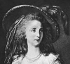Duchesse de Polignac
-
 Marie Anne de Mailly-- Nesle, Duchesse de Chateauroux
Marie Anne de Mailly-- Nesle, Duchesse de Chateauroux -
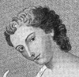The Marquise de Prie
-
 The Marquise de Vintimille
The Marquise de Vintimille -
 The Comtesse de Mailly
The Comtesse de Mailly -
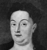Ehrengard Melusina Von Der Schulenburg, Duchess of Kendal
-
 The Countess Von Platen
The Countess Von Platen -
 The Baroness Von Kielmanseff, Countess of Darlington
The Baroness Von Kielmanseff, Countess of Darlington -
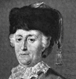Catherine II, Empress of Russia
-
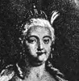The Empress Elizabeth
-
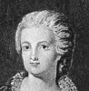Princess Dashkof
-
 Elizabeth Chudleigh
Elizabeth Chudleigh -
 Augusta, Princess of Wales
Augusta, Princess of Wales -
 The Trial of the Duchess of Kingston
The Trial of the Duchess of Kingston -
 The Comtesse de la Motte
The Comtesse de la Motte -
Count Cagliostro
-
 The Duchesse de Polignac and the Comtesse de Polastron
The Duchesse de Polignac and the Comtesse de Polastron -
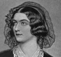Lola Montez
Search OCLC WorldCat for this title.
Search Google Books for this title.
Turnock, Sarah Elizabeth. Women of the Bible. London: Burroughs, [1899].
Search OCLC WorldCat for this title.
Search Google Books for this title.
Turnock, Sarah Elizabeth. A Woman's Tour in Palestine. Manchester: Heywood, 1907.
NOT:=auto/biography.
Search OCLC WorldCat for this title.
Search Google Books for this title.
Tweedie, Rev. W[illiam] K[ing] [1803-1863]. The Early Choice: A Book for Daughters. London, Edinburgh and New York: Nelson, 1855; 1857; 1859; 1860; 1862; 1863; 1864; 1866; 1868; 1871. Boston: D. Lothrop; Dover, NH: Day, 1865; 1869. Cincinnati, OH: Poe & Hitchcock, 1866; Hitchcock & Walden, 1869. Cincinnati, OH, and New York: Jennings & Pye; Eaton & Mains, [1870-1910?].
TOC: Laura Bridgman; Charlotte Elizabeth; Maria Gaetana Agnesi; Queen Esther; Monica; Catherine II; Olympia Morata; Lady William Russell; Lady Hester Stanhope; Madame Guyon; Manon Plipon , Madame Roland [sic]; Madame de Stael; Annie MacDonald; Mrs. Fry; Ann Hasseltine Judson; Sarah Martin; Mary Jane Graham; Clementine Cuvier; Mrs. Mary Winslow.
Author of Earnest Men, Their Life and Work, Daily Duty: A Book for Girls , and several historical geographies of the Bible, among other works. “The late Rev. W. K. Tweedie, D.D., Author of ‘Seed-Time and Harvest,’ &c.” Frontispiece: a medley of images of babies “Learning to See,” “to Grasp,” etc. Pref. “This volume, in this edition, has been to a great extent re-written, and four new chapters have been added. It is chiefly designed for the young. . . to train them to connect happiness or sorrow with conduct and character” (iii). Much of text consists of life-narratives, in addition to subjects named in table of contents. Illustrations introduce further subjects without recounting their lives (e.g Miss More and Dr. Johnson [facing p. 80]).

Search OCLC WorldCat for this title.
Search Google Books for this title.
Tytler, Sarah [i.e. Henrietta Keddie]. The Countess of Huntington and Her Circle. London: Pitman, 1907. Cincinnati, OH, and New York: Jennings & Graham; Eaton and Mains, 1907.
NOT:=male-female collective biography. Keddie a.k.a. Tytler [pseud] was a novelist who wrote a biography of Victoria; Marie Antoinette; volumes on Modern Painters, Musical Composers, Old Masters, etc. The Googlebooks version of this book offers lengthy running headers for each chapter, advertising events in the life of The Countess of Huntington and events relevant to the religious movements with which she was involved. The frontispiece features a photogravure of the Countess, and the book features illustrations throughout, though they most commonly depict men and places of significance to religious history (portraits of George Whitefield and John Wesley, for example). The first chapter opens: "The acts of John and Charles Wesley, George Whitefield and their fellows, have been fully commemorated; but the woman who worked along with them from youth to age, who gave her time, her influence, her substance, and the remarkable organising and ruling power which rendered her the English Deborah of her church and generation has been less fortunate in her biographers." The book concludes with "Pitman's Spring Announcements," advertising forthcoming publications from the publisher as well as two pages of advertisements for the author's recently published works.
Search OCLC WorldCat for this title.
Search Google Books for this title.
Tytler, Sarah [i.e. Henrietta Keddie]. Girlhood and Womanhood: The Story of Some Fortunes and Misfortunes. London: Strahan and Co., 1868. London: Isbister, 1880. London and New York: Ward, Lock, 1895.
Chapter titles: Cain's Brand; On the Stage and Off the Stage; A Cast in the Waggon; Adam Home's Repentance; Hector Garret of Otter; The Old Yeomanry Weeks; Diana; Miss West's Christmas Adventure.
NOT:=historical fiction, advice. One of her many historical or instructive fictional works.
Search OCLC WorldCat for this title.
Search Google Books for this title.
Tytler, Sarah [i.e. Henrietta Keddie]. Heroines in Obscurity. London: Strahan, 1871; Ward, Lock, and Co., [1890].
An account of several heroine’s lives as a model for young women. This is the second series in “Papers for Thoughtful Girls.” Some chapters are overviews of a certain virtue for young women, not biographies (other titles indicate the names, or the names are added in parentheses in this list).
TOC: I. Trustworthiness: How Polly Culpepper Kept Her Father's Castle; II. Single Heartedness: Joan Walton’s Ways When Fortune Turned Her Wheel ; III. Industry: Jenny’s Lesson [no last name]; IV. Enterprise: A Pearl (Margaret Copeland); V. Order: A Helpmeet ; VI. Strength of Body and Mind: The Woman Who Trampled on Dragons (Judith Thynne); VII. Endurance: Standing in Her Lot on God’s Earth ; VIII. Living Charity: “A – Weary” ; IX. Bounty, Dignity, and Daintiness: Bennet Le Strange (Bennet Le Strange); X. Wisdom and Courtesy: Two Visits in Two Letters ; XI. Noble Satisfaction (Levinia Fenton).
Search OCLC WorldCat for this title.
Search Google Books for this title.
Tytler, Sarah [i.e. Henrietta Keddie]. Papers for Thoughtful Girls: With Sketches of Some Girls’ Lives. Edinburgh: Daldy, Isbister, 1862; 1875. London: Strahan, 1863; 1865; 1866; 1870. Boston: Crosby and Nichols, 1864. Illustrated by J. E. Millais. New York: Crosby & Ainsworth, 1865. Boston and New York: Woolworth, Ainesworth, Barnes, 1868. Boston: Estes and Lauriat, [1870-79?]; 1880. Nashville: A.H. Redford for M.E. Church, 1875. 10th ed., London: Isbister, 1881; [1890].
NOT = self-help book, though title indicates some biographical examples. Chapter titles: I. Youth; II. Intellect; III. Beauty; IV. Favor; V. Ambition; VI. Pleasure; VII. Friendship; VIII. Godliness; IX. Kindliness; X. Consolations.
Search OCLC WorldCat for this title.
Search Google Books for this title.
Tytler, Sarah [i.e. Henrietta Keddie]. Six Royal Ladies of the House of Hanover. London: Hutchinson, 1898; 1899.
Consists of six primary subjects with two-five chapters, with roman numerals, their titles as given here.
TOC: The Electress Sophia: The Princess Sophia; A Visit and a Marriage; The Duchess; Court Match-Making; The Electress; Sophia Dorothea of Zell, Wife of George I.: Sophia Dorothea of Zell; Wife of George I.; Konigsmark's Death; Caroline of Anspach, Wife of George II., and Her Daughters: The Electoral Princess of Hanover and Princess of Wales; At Leicester House and at St. James's; The Queen; Charlotte of Mecklenburg-Sterlitz, Wife of George III.: A Young Queen-Consort; A Royal Wife and Mother; An Aging and Aged Queen; Caroline of Brunswick, Wife of George IV.: Royal Bride; A Contentious Couple; A Wandering Princess and Repudiated Wife; Adelaide of Saxe-Meiningen, Wife of William IV.: The Duchess; The Queen.
Search OCLC WorldCat for this title.
Search Google Books for this title.
Tytler, Sarah [i.e. Henrietta Keddie]. Tudor Queens and Princesses. London: Nisbet, [1895]; 1896. New York: Whittaker, 1896; Barnes and Noble, 1993.
TOC: Elizabeth Tudor; The Venerable Margaret; Elizabeth of York; Margaret Tudor; Mary Tudor; Catherine of Arragon; Anne Boleyn; Jane Seymour; Anne of Cleves; Catherine Howard; Catherine Parr; Mary Tudor.
Search OCLC WorldCat for this title.
Search Google Books for this title.
Tytler, Sarah [i.e., Henrietta Keddie], and J. L. Watson. The Songstresses of Scotland. 2 vols. London: Strahan, 1871.
TOC: Vol. 1: Lady Grisell Baillie; Jean Adam; Mrs. Cockburn; Miss Jean Elliot; Miss Susanna Blamire; Jean Glover; Mrs. Elizabeth Hamilton; Vol. 2: Lady Anne Barnard; Carolina Baroness Nairne; Miss Joanna Baillie.
Search OCLC WorldCat for this title.
Search Google Books for this title.